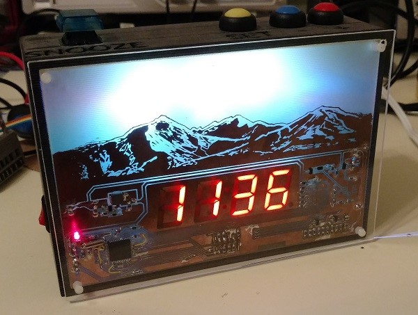

PCB Art Alarm Clock
|
Overview
For this project, I made an alarm clock for myself that uses a printed circuit board as the digital clock face.
I designed and made pretty much every component of this project from scratch, so it took me quite a while to complete. I'm pretty
excited about how it turned out though. I designed the PCB, and actually developed and etched it myself. I also wrote all of the
microcontroller code, and designed a custom enclosure that I had 3D printed.
The clock has a mountain scene design etched into the metal of the PCB and uses RGB backlighting
to illuminate it from behind with colorschemes based on the time of day. The PCB has no soldermask by design,
so that it's sort of transparent to allow both the light from the backlighting and the digital clock digits to shine through.
It has alarm functionality with a built in speaker, and has a snooze button which is a very important feature for me :)
The next few sections will go over the build process in more detail if you're interested.
Clock Features and Overview I came up with the idea for the basic idea for this project by noticing that light shines through some of the PCBs on my desk that don't have solder mask. I though it would be cool to make a PCB that had some kind of image etched into the metal and have light shine through it. A clock was something that I thought would look cool but also be useful. I knew I wanted to have alarm functionality and RGB backlight as basic features for the clock. I didn't want to add too many more things because it would quickly become a much bigger project than I intended. I also added circuitry for battery backup to the clock, but didn't end up implementing it in the end as it seemed kind of unecessary. Designing the PCB I started out designing the PCB that would become the clock face. First step was to choose a controller to use in the design. Since I was trying to keep it sort of simple I opted for PIC microcontroller. I'm most familiar with PIC as far as development environments go, and wasn't looking to include any fancy internet connected features or anything like that. Specifically, I used the PIC18F46J50 in part because I had one laying around, but also because it happens to have an integrated real time clock (RTC) module that will keep track of time without any software interaction. For the other parts in the system, here's a short list of some of the main ones: A full list of components used can be found at in the CSV file at the last link. I'll also attach all of the design files to this page in case anyone wants to take a look or use them.
I've previously used Eagle to design the few PCBs I've done, but I kind of don't love using it. I decided to give DipTrace a try for this particular board design and ended up liking it a lot more. Not really related to this post, but I thought I'd bring it up because I liked it so much more :). It just felt a lot more polished and easy to use. Anyway... on to the schematic design... Below are images of the final schematic used for the clock.
The board is powered by a 5V input from a micro USB cable. That voltage net is used to drive the RGB LEDs and speaker through load switch FETs. The 5V VIN also goes to the backup battery charger, and a 3.3V switching buck voltage regulator. That 3.3V output powers the PIC microcontroller. The power schematic sheet also includes a circuit that I designed to switch the supply voltage from the 5V input to a backup battery. The circuit uses a comparitor to compare the 5V input to the 3.7V LiPo battery voltage. If the 5V input drops below the Vbatt voltage, the comparitor switches on a P channel FET that connects the battery voltage to the 3.3V output. This means that only the PIC microcontroller will be powered while running from the battery. The PIC would also get a notification that it is running on battery power by checking the POWER_GOOD signal from the 3.3V regulator. This allows the PIC to stop trying to power the RGB LEDs and speaker, and simply enter sleep and maintain the time. The PIC has several key functions. It accepts input from the user through several buttons simply connected to GPIOs configured as inputs. It uses GPIO outputs to control a 4 digit seven segment LED display. The way that the 7 segment LED display is controlled by only displaying a single digit at a time, but updating which digit is displayed very quickly so they appear to all be lit. See here for a pretty good explanation of 7 segment operation. This particular PIC chip has a hardware real time clock that needs an external 32.768kHz crystal for accurate operation, so that crystal is included. For the main PIC oscillator the internal oscillator source is used, so it doesn't require yet another crystal. As stated earlier, the PIC controls the RGB LEDs and speaker through n-channel FET load switches. The speaker one includes a capacitor site to implement a simple low pass filter in order to generate a smooth audio waveform from a PWM signal. Once the schematic was done, I moved on to layout of the PCB. The image below show the completed final layout.
Since I was going to be printing the PCB myself, I wanted to make the PCB one sided. There are still a lot of wires that had to be hand soldered to the back of the PCB to make it work, but a good amount of the design is still on the front side. For the mountain scene, I just googled for a black and white mountain scene and this one is the one I liked best. Diptrace has a cool feature where if you add and image to the design, it automatically makes black metal and white negative space. Making the PCB The next step in the process was to actually make the printed circuit board. I found a couple videos on youtube the showed how to do this namely this one: Circuit Skills: Circuit Board Etching The method that I used which is outlined in that video is the photoresist method, and I actually bought a kit to do it. The kit can be found here: MG Chemicals 416-K 9 Piece Photofabrication Kit The basic idea is that you buy a board that is covered in a layer of copper and a photoresist (a material that will be removed only if it is exposed to light). You then print out your PCB design on a transparency sheet like the ones used for overhead projectors. The board is then covered with this transparency sheet and exposed to light for ~10 minutes. Once that's done, the board is placed in a developer solution that will remove only the resist that has been exposed to the light (positive developer). This leaves the metal layer underneath the resist exposed so that it can be etched away by the acid. The acid used to etch the metal is Ferric Chloride. It stains literally anything so you have to be kind of careful with it. The below images show the process.
The PCB etch process took a few tries to get right and even then I never really got it to work perfectly. You can see in the right side of the PCB, it didn't really get etched completely. I think that was because we didn't leave it in the developer long enough. In any case, I had to physically cut out some of the traces with an exacto knife to make it useable, but it still ended up looking pretty good I think. Also, you can tell that I made it because it's far from perfect :). Once the board had been etched the next step was to drill all of the holes for the vias. I bought a stand for my dremel that allows you to use the dremel as a drill press which was really handy for this purpose. I had to buy some really thin drill bits to go along with it as well. The via sizes I used for the PCB were much smaller than the drill bits I had.
The next step was to finally start populating and testing the board! The PCB is single sided, but still requires quite a few wires to be soldered to the back side to make it work. After many hours of soldering, I finished populating and testing the board, and below are some images of the results. As you can see, I made a few mistakes with the schematic that had to be fixed with some fly-wire. Mainly, I used some pins on the microcontroller that weren't actually outputs , or used ones that had lower current limits than I wanted for the seven segment LEDs.
Software Now for the really tedious part. This ended up being a lot more time and work than I thought it was going to be. That could probably be said about most things though... The code for the PIC was written in C. Each functional area had it's own file for example, the RGB LEDs, speaker, clock, and seven segment display, all had their own files. The code is organized so that the main loop just calls a task function for each of the functional areas. That task checks if it has something to do, then executes it and jumps back to the main loop. Much of the functionality of the clock requires waiting for specific time intervals before an action is taken. For example, the seven segment display has to wait a certain amount of time before it updates which digit it's displaying and the buttons have to wait certain times before they can sample for debouncing. Because pretty much all functions require this ability, all of them use a common 'System Clock' to measure how much time has elapsed since the last event. That way each function simply needs to mark the system tick timestamp where it started and subsequently check the current timestamp to see how much time has elapsed. The system clock measures ticks in 1ms increments and is implemented with a hardware timer. The benefit to doing it this way is that a the processor can go service other tasks while the current task is waiting for something. The other (maybe) interesting part about the code is the implementation of the speaker alarm tone. For this, I found someones code online that converts a wav file into a C array of PCM values here: Wav to C Converter (thanks CJ!). So I had the option to use any audio file as the alarm tone once I wrote the PWM code. To actually get sound out of a speaker you need digital to analog converter to convert the digital audio sample values into a voltage that drives the speaker. In this case I used the Pulse Width Modulation (PWM) feature of the PIC in conjunction with a simple low pass filter to recreate the waveform. Using Audacity, I created a simple beeping tone and exported it to an 8 bit 8kHz wav file. Then using the above tool, got an array of PCM values that I could plug directly into the PWM duty cycle register in 1/8kHz second intervals to recreate the sound. If you're interested in more details of the code, I'm putting a link to a zip file containing the full source code at the bottom of the page, so feel free to go through it! 3D Printing the Enclosure This is the first time I've actually attempted to 3D print anything. Instead of buying a 3D printer, I designed the enclosure in SketchUp and used an online service to actually do the printing. I ended up using 3D Hubs to print it as it was by far the cheapest. It's a little bit different in that it's a network of independent people with printers who are near you that print the design and send it to you as opposed to a centralized company. It's kind of like rideshare for 3D printing. It worked out super well for me, and I'm really happy with how it turned out. The first step was actually designing the enclosure in CAD. I used Sketchup only because I've used it a little bit before. I'm not sure it's really the best for 3d printing, but hey...it works. This was definitely a "learn as you go" kind of process. I have pretty much no CAD experience and this took WAAAYYYYY longer than it should have. The design itself is really just a hollow box with an angled back side. I made sure to include the holes for all of the buttoms, speaker, and mounting holes so I didn't have to drill into it too much. I also decided to have the labels for each of the buttons incorporated into the printed model. I though it would look a lot more professional than me writing the labels with a sharpie. Here are some images of the final CAD model.
For the material of the part, there were a bunch of options. I ended up choosing ABS as it is supposed to be stronger than PLA. There was a bit of difficulty getting the part printed w/ ABS as it was warping, but eventually they were able to get it printed with a few tweaks to my amateur design. A few days later I had the final enclosure! Here are some images of how it turned out.
As you can see from the images, the surface is really rough and you can see the individual print lines. To give it a better finish, I decided to sand it down. I first used a higher grit sandpaper, and worked down to a finer grain to give it a smooth finish. It ended up losing some of the black color and becoming kind of gray during the sanding process. I considered painting it, but it actually does look kind of cool. It almost looks like a gray wood finish even though it's plastic. See the images in the final section for the results. Putting it All Together Wooo finally done! Once everything was ready, I hot-glued all of the wires and components on the back of the PCB for strain relief. I Also hot-glued the speaker, USB plug, and Snooze button into place. The +/-/SET buttons are all panel mount so they simply get screwed into place. The PCB is held on by some plastic standoffs that are glued into the mounting holes. I cut a piece of acrylic glass to go over the front of the clock because ESD would make it restart everytime I touched it, and I'm 100% sure that I'd break it eventually by shocking it. Anyway here's the final thing!!!
All Design Documents
|
 | |||||||||||||||||||